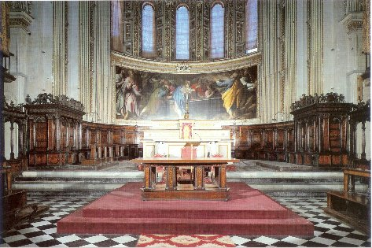
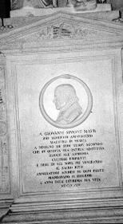
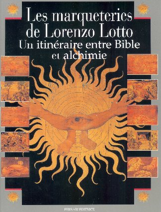
|
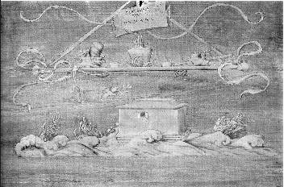 |
La table de
l'alchimiste domine les eaux du déluge qui se
retirent. L'inscription « restauratio humania » exprime le renouvellement par l'eau et le feu. L'arche de Noë renvoie à Arca, proche d'Hermès par Arcas. On trouve dans la château de Dampierre-sur Boutonne un sujet semblable mais le format réduit a conduit l'artiste à simplifier le décors : au lieu qu'ici, il est restitué en sa pureté. Cette arche représente Dèlos où Latone parvient à accoster après avoir été poursuivie par Typhon. Au-dessus de l'arche, on voit la colombe tenant une branche d'olivier, signe avant-coureur de la lumière et de la grâce. Au-dessus, le symbole du feu - D - formant une sorte de balance : à la position du fléau, on voit le creuset de l'alchimiste dans lequel des fagots ont été disposés, ce qui représente une indication sur l'origine du feu secret. De part et d'autre, des têts à rôtir vraisemblablement, dans lesquels on cuit l'antimoine des Sages [selon la recommandation d'Artephius]. On remarque encore la pierre de touche : lydius lapis, qui renvoie à Battus. |
|
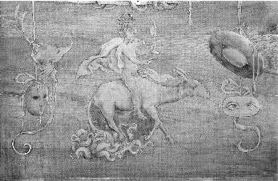 |
Un homme nu qui
chevauche un âne entre un masque qui louche
et un masque vide. Ce panneau de protection a pour contre partie la Submersion du Pharaon ; le thème de l'eau se poursuit donc ici et renvoie aux rites baptismaux. Quelle est la fonction de cet âne ? Fulcanelli a fait voir que l'on pouvait y trouver « l'âne-timon » qui permet de guider le « fou » de l'oeuvre, c'est-à-dire et l'on en conviendra volontiers, le cavalier. L'homme tient dans sa main droite un compas qui lui permet de s'orienter selon les principes que l'on peut lire dans un ouvrage fort curieux : le Pilote de l'Onde vive ou le Secret du Flux et du Reflux de la Mer, de Mathurin Eyquem, sieur du Martineau. L'homme tient de la main gauche un miroir bi convexe où l'on peut voir une lentille : c'est le Miroir du Monde qui cache un point de science dont on a parlé ailleurs. Détail curieux, sa tête est enfermée dans une cage. L'allégorie est claire : l'esprit doit être enfermé dans une prison, c'est-à-dire que le Mercure doit être disposé dans l'athanor pendant le travail. Le masque, à droite, qui « louche » des deux yeux recouvre un point de cabale où l'on peut voir soit amjiboloV - il ne s'agit certes pas de l'amphibole, minéral caractéristique du métamorphisme - soit llwdeV qui manifeste une idée d'enroulement et de mouvement circulaire : on peut y voir le serpent Ouroboros de la tradition hermétique. Quant au chapeau de prélat, il nous rappelle un autre couvre-chef : la mitre de l'évêque qui, en alchimie, est l'intermédiaire entre le Soleil et la Lune. A gauche, un masque, vide celui-là : on peut lui prêter le sens, assez général, qu'on attribue au vecteur qui règle la circulation des énergies spirituelles éparses dans le petit monde de l'Artiste ; et c'est ce que vient rappeler à propos le casque emplumé où l'étudiant sait qu'il faut lire « cado, cassito » [pour cassis par cabale] qui indique le degré de « fluence » de la matière. Ainsi, le casque qui louche et le casque vide sont-ils les symboles - inattendus certes au premier abord - du feu secret des Sages. Mais il nous semble que le symbolisme de l'âne, en liaison avec le « fou, le Mat » qu'il porte, n'a pas été épuisé : on pense bien sûr à l'âne d'or d'Apulée [la Submersion du Pharaon ne serait alors qu'une allégorie de plus sur l'aveuglement que provoque l'or, métal qui ne cède jamais rien à aucun autre, cf. Saint Jean Baptiste] ; on peut penser aussi à l'âne chargé de porter le coffre servant de berceau à Dyonisos [cf. Atalanta fugiens]. Enfin, on peut évoquer cette parole, dans Aristophane où l'esclave de Bacchus dit à son maître qui lui place un fardeau sur le dos : « Et moi je suis l'âne qui porte les mystères. » Que l'âne soit rattaché à Saturne ne nous paraît donc nullement étonnant au vu de ce qu'écrit Artephius dans son Livre Secret : « L'Antimoine est des parties de Saturne... » |
|
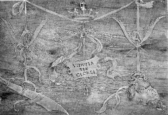 |
Cartouche avec
l'inscription « Viduitatis
gloria » qui pend entre une épée
dégainée
et une tête tranchée Ce panneau fait pendant à une scène où Judith vient de décapiter Holopherme. Tout autour, les troupes des assiégeants sont dans la débâcle. Plus que d'une simple épée, il s'agit d'un cimeterre ; le même que celui avec lequel Persée a décapité la Gorgone ; le même encore que l'on voit dans l'une des sculptures de l'escalier hermétique du château de Charles de Lorraine. Rappelons que c'est Mercure qui donna à Persée ce cimeterre. Par ailleurs, on est obligé d'établir le rapprochement - de cabale - avec la décapitation de saint Jean Baptiste. Là se situe le noeud du problème : la distinction, gratuite d'ailleurs, entre la corruption et la sainteté... C'est une grande leçon à retenir de l'étude des traités des vieux alchimistes. |
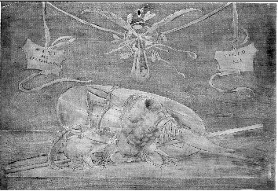 |
Une fronde
couronnée et des armes en vrac. Du faîte de rubans pendent deux tableaux portant l'inscription « maximi certaminis victoria ». Au-dessous, les armes de Goliath sont déposées et le bouclier montre sa face interne. Ces armes, cette cuirasse ont même valeur que celles, déjà vues, en Avignon - cheminée alchimique - ou à Bruxelles - escalier hermétique. C'est d'eau de mer ou si l'on préfère, d'eau salée, qu'est faite cette cuirasse, aussi extraordinaire que cela puisse paraître de prime abord. Et si le bouclier fait voir sa face interne, c'est pour nous protéger du regard de Méduse dont s'orne, sans doute, sa face externe. C'est dire que nous tenons ici une version de l'égide. La cuirasse correspond aussi, par cabale, à la première partie de l'homme : enveloppe externe de l'Homme armé, c'est elle qu'il faut d'abord effondrer par la dissolution, première putréfaction. Quant à la fronde, elle rappelle une citation de la Bible - Reg, XVII, 30-40 : David, refusant l'épée de Saül, choisit dans un torrent cinq pierres très polies, et s'avance vers Goliath. Or, ces cinq pierres ont fort à voir avec celles que nous apercevons dans l'un des emblèmes de Michel Maier, cf. Atalanta XXXVI. |
|
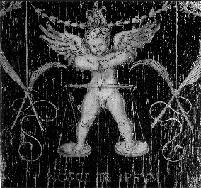 |
Amour sur la Balance. Un putto
ailé tient en équilibre
la balance qui paradoxalement, le soutient. Les alchimistes affirment que l'oeuvre peut - et doit - être fait par le seul Mercure. Nous trouvons en cet ange l'intermédiaire entre le Ciel et la Terre où s'affirme l'affrontement entre Zeus et Ploutos. On remarquera les deux phylactères filiformes : il s'agit des serpents de Nicolas Flamel. Le centre de gravité du système se trouve au niveau du fléau, soutenu par l'ange victorieux et flamboyant : c'est le point fixe analogue au caducée d'Hermès. Les trois flammes au-dessus de sa tête sont les insignes du feu secret. Au-dessous des plateaux, on lit « nosce te ipsum ». Sur la balance, cf. notre zodiaque alchimique ; sur l'image de Thémis, cf. Verbum Dimissum de Bernard le Trévisan. |
| L'univers naît
des ténèbres primordiales. C'est l'image du chaos des vieux textes. Dans sa Philosophie Naturelle Restituée en sa Pureté, Jean d'Espagnet - qui fut le maître de Philalèthe, à qui son Introïtus doit beaucoup - écrivait ces lignes : « Celui qui transfère l'autorité suprême de l'Univers à une nature autre que la nature divine, nie qu'il y ait un Dieu. En effet, il n'est pas permis de reconnaître un (autre) vouloir incréé que cette nature, tant pour produire que pour conserver les individualités de la machine étendue, sinon l'esprit lui-même du divin Architecte, cet esprit qui au commencement planait sur les eaux, qui fit passer de la puissance à l'acte les semences de toutes choses confusément mêlées dans le chaos, et après qu'il les en eût tirées, traita les essences inférieures en faisant tourner la roue d'une constante altération, pour les composer et les dissoudre selon un mode géométrique. » [cap. IV] Voilà expliquée l'inscription « Magnum Chaos ». Comment trouver une analogie entre ces ténèbres, voilant le feu suprême, et notre monde sublunaire ? Sinon par la figuration du chaos minéral et métallique : on le trouve sous forme ardente, lorsqu'il embrase la terre qui se dégage des volcans : c'est la lave. Et la lave participe à la fois de l'eau - elle est mobile en fonction de sa température -, du feu - elle est ardente - et enfin de la terre, élément qu'elle finit par devenir progressivement, au départ du feu. |
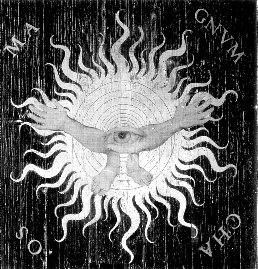 |
|
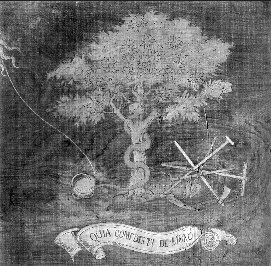 La création d'Ève |
Le serpent sur
l'arbre du Bien et du Mal, sa longue queue enroulée
autour d'un oeuf, regarde les outils agricoles. Nous devons voir dans cette image du serpent à tête de femme le premier Mercure des alchimistes. L'arbre - agrandissez la photo réduite - est porteur des fruits, pour l'instant, en puissance, que réserve à l'Artiste son Soufre rouge encore dans les limbes. A lui donc d'assurer cette agriculture céleste par laquelle se distingue, comme trait remarquable, l'Art sacré, de l'agriculture terrestre, non moins importante. Et ces outils aratoires, dont on reconnaîtra certains dans la section Fontenay, sont très présents dans le symbolisme de l'Art ; voyez par exemple ceux de l'escalier hermétique du château de Charles de Lorraine. On reconnaît la faux, instrument de Cronos, la fourche ou trident, instrument de Poséidon ; la pelle et le râteau, instruments de Ploutos et enfin, une bêche que l'on prêterait volontiers à Zeus... Cet arbre peut être assimilé à notre Arbori solare, cf. Fontenay. en ce cas, le Mixte réalisé par cette association au serpent femelle permet d'en tirer l'image éidétique de l'Hydre de Lerne : comme nous l'avons dit ailleurs, à l'Artiste de dégager la seule tête immortelle - son Soufre rouge et sa teinture. |
| Une
main ouverte domine deux autels; deux béliers sont prêts
à l'offrande. Le Bélier, chacun le sait, est l'un des emblèmes majeurs de l'Art. Comme nous l'avons dit maintes fois, c'est un hiéroglyphe double et ce caractère dual arrive à s'exprimer jusque dans ce cartouche de Lotto. Par ARIES, il tient en effet au CORPS de la pierre et par ARES, il tient à l'agent de dissolution par lequel s'opère la séparation au niveau du sujet initial. Ce sujet, maintes fois là encore, nommé en ces pages, touche à la fois au SEL, au CORPS et au SOUFRE. C'est une substance minérale très répandue qui tient de l'efflorescence saline et qui, comme l'assurent bien des Artistes, est à la fois pierre et non pierre. C'est par un « tour de main » adéquat que l'Artiste arrivera - ainsi qu'il est bien montré au tombeau des Carmes à Nantes - à extirper le dragon de la forteresse. Le but du sacrifice de ce Bélier est expliqué dans la section sur saint Jean Baptiste. Il y a plus : on peut faire un parallèle entre les deux frères et les matières des Sages. Dans le Sacrifice de Caïn et Abel, Lotto a fait figurer Abel en contemplation devant la création tandis que l'agriculteur Caïn s'empresse de défricher la terre. Il y a là une indication : Abel, qui s'élève évidemment vers Dieu figure l'allégorie du Corps dissous dans le Mercure [entendez la TERRE orientée vers l'ESPRIT]. Au lieu que Caïn, qui défriche la terre, s'identifie aux boeufs de labour et au principe pontique. On peut donc vers la double relation : ABEL = ARIES et CAÏN = ARES. |
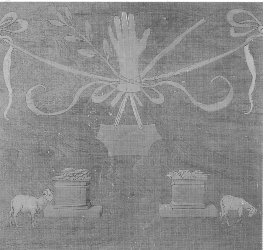 Le sacrifice de Caïn et Abel |
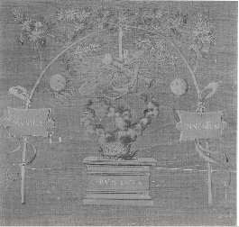 Tubal |
Tubal
-
il s'agit d'une sorte de compendium. En effet, Tubal, descendant de Caïn, est réputé être l'inventeur de la musique. La marqueterie donne à voir un autel central d'où sortent flammes et fumée : c'est le creuset ou CRUX - - de l'Artiste. La marque TVBALIS SACRA est gravée sur ce creuset qui, au vrai, pourrait aussi bien être un maître hôtel qu'un tombeau. Au-dessus, des instruments de l'art s'inscrivent comme au faîte de l'oeuvre, avec des buccins, cors et viole. Voilà qui n'est pas sans rappeler une gravure de Hans Vredemann de Vries [in Henri Kunrath, Amphitheatrum sapientiae aeternae, 1609], qui tient le milieu entre l'oratoire et le laboratoire. Rappelons, comme le montre E. Canseliet dans son Alchimie expliquée sur ses Textes classiques, que l'alchimie s'apparente de près à l'art de la musique pour des raisons que nous avons expliquées dans l'introduction à l'Atalanta fugiens. De part et d'autre du creuset, et apposés à une arche formée de deux arbres [dans lesquels il n'est pas osé d'apercevoir l'Arbori Solare et Lunae], on aperçoit les deux luminaires qui font le sujet de l'oeuvre. A gauche donc, SOL et à droite LUNA. Voyez pour des éclaircissements sur la présence du buccin et des cors, le frontispice du Mutus Liber. |
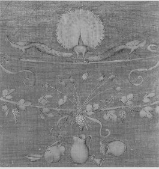 L'Ivresse de NOÉ |
Pots
debout et renversés, bouquet de sept pavots sur un sarment de
vigne et trois paons
- Ce panneau résume des emblèmes majeurs de l'Art sacré : d'abord, le symbolisme des pots est essentiel : pot de fer contre pot de terre, n'est-ce pas là l'expression des deux principes antagonistes de l'oeuvre, exprimés avec tant de soin et d'exactitude au grand portail de Notre Dame ou encore dans l'un des caissons de la galerie du château de Dampierre - sur - Boutonne [dont on rappelle qu'il a été dévasté par un incendie en 2002] ? La vigne, par le biais de Bacchus, est omniprésente dans le symbolisme alchimique, comme elle l'est, du reste aussi, dans celui du christianisme. Elle est le point de jonction entre le CIEL - l'AIR - par le biais de la lumière et la TERRE. Elle permet, en outre, dans des tonneaux de vieux chêne, la préparation de l'Arcanum duplicatum, qui est l'une des voies de la préparation du Mercure. Cet attachement, si l'on peut dire, à la terre, est redoublé par la mention du pavot : on l'offre, dans le symbolisme éleusinien, à Déméter - déesse de la Terre - ; mais le pavot représente aussi la force du sommeil et d'oubli qui s'empare des hommes après la mort et avant la renaissance : c'est donc le thème de la mise au tombeau et de la résurrection [entendez celui de la dissolution puis de la réincrudation] qui est ici mis en exergue. Mais plutôt que de faire de la terre le lieu de la transmutation, il faut en faire plutôt le lieu de la transfiguration : tel est le sens hermétique de la TERRE qui représente le réceptacle du Soufre ou Âme de la pierre, lorsqu'il a été porté à un degré suffisant de dépuration. Le paon est l'animal dédié à Junon - Héra. C'est le symbole de la résurrection qui se signale - par cabale - lors du travail, par l'apparition d'irisations : elles sont la marque de la conjonction radicale des principes qui prend lieu lorsque les pots, que l'on voit brisés et renversés, ont été remis dûment en forme. |
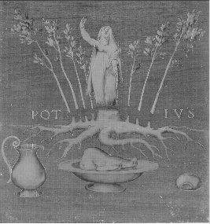 Macchabée |
Une
femme sous forme d'arbre est coupée avec sept bourgeons depuis
ses racines et domine des mets préparés - Quatre éléments dominent dans cette marqueterie. 1)- la figure de la Vierge envisagée comme Virgo paritura : c'est le personnage qu'on aperçoit. Inutile de dire que le rapport aux sept frères de Maccabée nous paraît purement circonstanciel et pour ainsi dire fortuit - du moins vu sous l'angle de la cabale. Car cette figure virginale, Flamel nous la montre aussi, sous des dehors différents, dans le Livre d'Abraham Juif. 2)- dans un plat, le sanglier qui masque la figure d'ARES, cf. Atalanta XLI. Aussi est-ce allé assez vite en besogne que de dire qu'il s'agit de « mets préparés ». Voire ! Préparés pour qui ? Il faudrait évoquer le sanglier d'Erymanthe capturé par Hercule. Ou encore celui de Calydon dont nous parlons dans l'Atalanta fugiens. Le sanglier est étroitement associé à la forêt, qui représente selon la tradition, la prima materia ou sujet initial - cf. De Lapide Philosophorum de Lambsprinck -. Il se nourrit du gland, le fruit du chêne - cf. Philalèthe, VI là-dessus. Aussi n'apparaît-il pas absolument étonnant que la tradition chrétienne assimile le sanglier à l'animal du démon, vu son caractère mercuriel avancé : ne le nomme- t-on pas le Moccus Porc, c'est-à-dire Mercure ? N'est-ce pas lui qui culbute Adonis dans l'emblème XLI de l'Atalanta et donc, n'est-ce pas par son entremise que les roses blanches se colorent en rouge ? Et n'aperçoit-on pas la figure totémique d'Ares se profiler dans le lointain, exprimant par là le but de l'opération chimique, voilée sous le masque de l'allégorie poétique et mythologique ? 3)- le sang d'Adonis qui s'écoule de ses blessures a la propriété curieuse d'être blanc, exactement comme le liquide qui s'écoule du flanc du Christ après qu'il ait été blessé par la lance de Longin. Cette dissolution - par cabale - s'apparente à l'humide radical des métaux, c'est-à-dire à leur racine. Nous la voyons sur ce panneau de protection. 4)- les rameaux constituent les branches de l'Arbori solare. Ils sont sept, par référence aux planètes et aux métaux connus à l'époque [ce qui n'est pas tout à fait vrai puisque le zinc semblait déjà connu des Anciens et peut-être aussi le platine, à en croire Hoefer - en tout cas pas comme métal particulier]. |
| Deux
soldats attaquent un jeune berger qui les affronte en les
bénissant
- Que de symboles hermétiques dans cette image. Voyons d'abord que l'arbre qui surplombe le jeune homme a une particularité, en ce qu'il est feuillu à droite, avec des bourgeons et dénudé à gauche. Fulcanelli a déjà illustré ce point de science lorsqu'il a commenté l'aspect d'arbres visibles sur des caissons du château de Dampierre, dans ses Demeures Philosophales, tome II, p. 273, cf. Verbum dimissum, note 67. L'arbre sec, ici cette partie du tronc disposée par Lotto à gauche, correspond au métal mis à nu - en son humide radical comme le montre la marqueterie précédente - tandis que l'aspect feuillu correspond à sa renaissance, i.e. sa réincrudation sous une forme dépurée et transfigurée [cf. Cristallogénie]. Remarquons ensuite que le cartouche porte l'inscription : HVMILITATIS ET PACIENTIAE EXEMPLUM. N'est-ce pas là l'équivalent de la maxime extraordinaire de Nicolas Grosparmy : « la patience est l'échelle des philosophes et l'humilité est la porte de leur jardin. » Voilà une cabale de bon aloi ! Quelle est l'allégorie qui recouvre cette scène de ces soldats attaquant ce pauvre berger qui répond en les bénissant ? On remarque dans l'iconographie alchimique une scène semblable où un personnage est cloué sur un arbre par une lance, mais il s'agit là de l'allégorie du serpent fixé au chêne ; le sens de la présente allégorie est différent. Nous avons, en somme, la TEMPÉRANCE qui s'oppose ici, à l'ACRIMONIE et à l'AGRESSIVITÉ. S'agirait-il là d'une autre variation sur le thème de l'acide et de la base, du vitriol et de l'alkali ? Nous serions tentés de le croire. |
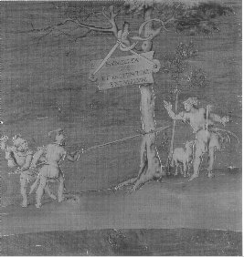 David sort de JÉRUSALEM |
| Des
ailes déployées soutiennent une sphère portant une
voile ; singe avec laurier ; femme chimère au corps de lion
tenant un sceptre - D'autres emblèmes majeurs de l'Art nous attendent ici. Tout ce panneau est centré sur le motif de la stibine dont Fulcanelli et E. Canseliet ont tant parlé. Elle présente ici des traits particuliers qui n'ont été exploités dans aucun traité d'alchimie ; qu'on en juge : car c'est le vaisseau ARGO qui nous est dépeint : le mât est fait de bois de chêne de Dodone. Le vaisseau se meut sur l'AIR comme en témoignent les ailes d'ANGE ou d'AIGLE déployées - cf. le tétramorphe de notre Tarot alchimique ou la chapelle du palais Lallemant pour l'interprétation. La chimère, à droite, évoque le sphinx -cf. Atalanta XXXIX et Atalanta XVI. Cette chimère tient le sceptre, dans lequel il nous faut voir le bourdon du pèlerin, hiéroglyphe du lien du Mercure. A gauche, le singe qui est l'un des symboles les plus mystérieux du microcosme mythologique propre à l'alchimie. Ce symbole fut examiné en son temps par E. Canseliet dans l'un des chapitres des Deux Logis Alchimiques [l'Eléphant, le Singe et les deux Bahuts]. Le singe est par cabale l'un des signes du Mercure : aussi peut-on considérer grand l'Artiste qui aura eu assez de persévérance pour préparer son Mercure animé : il aura assurément mérité la couronne de laurier ! Or, c'est précisément l'objet de ce panneau que l'animation du Mercure : observez les voiles et les ailes, indiquant un évident dynamisme : l'action combiné du VENT SOLAIRE et de l'EAU ÉTOILÉE... On a pu dire qu'il y avait un point déconcertant dans la nature du singe, qui est celui de la conscience dissipée : on ne saurait mieux, par cabale, parler du Mercure et du Soufre qui y est dissous. |
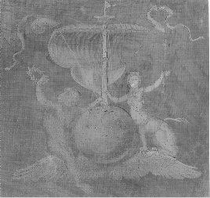 ESTHER |
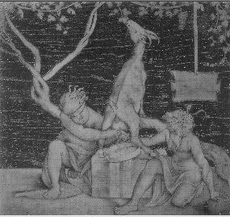 La Nutrition du Lapis |
La
nutrition du Lapis - C'est la chèvre Amalthée que nous visitons à présent. Nous l'avons croisée à de nombreuses reprises au cours de nos études de symbolisme : voici ce qu'en dit Pernety dans son Dictionnaire : Amalthée Chèvre qui fournit le lait dont les Nymphes nourrirent Jupiter. Ce Dieu la transporta au ciel, et fit présent à ses nourrices d'une des cornes de cette chèvre, à laquelle il donna la propriété de procurer à ces Nymphes tout ce qu'elles désireraient; elle en prit le nom de Corne d'abondance. Voyez-en l'explication chymique, liv. 3, chap. 4, et ailleurs, des Fables Égyptiennes et Grecq. dévoilées. Voici cet extrait que signale Pernety des Fables Egyptiennes et Grecques : Les Nymphes Adrastée & Ida nourrirent Jupiter, & l'on dit que les Abeilles mêmes se joignirent à elles. Ces deux Nymphes étaient filles es Mélisses, ou mouches à miel, & le firent allaiter par Amalthée. Nous avons dit que lorsque la couleur grise ou le Jupiter philosophique paraît, les parties volatiles de la matière dissoute se subliment, & montent en abondance au haut du vase en forme de vapeur, où elles se condensent comme dans la distillation de la Chimie vulgaire, & après avoir circulé, retombent sur cette terre grise qui surnage l'eau mercurielle. La Fable pouvait-elle nous présenter cette opération par une allégorie plus palpable & mieux caractérisée que par cette feinte éducation de Jupiter. Les deux Nymphes expriment par leurs noms mêmes cette matière aqueuse, volatile, puisque Ida vient d'IdoV, sudor, & Adrastée, d'a complétif, & de draw fugio. Si on les dit filles des Mélisses ou mouches à miel, n'est-ce pas de ce que ces parties volatiles voltigent au-dessus du Jupiter des Philosophes, comme un essaim d'abeilles autour d'une ruche? Ces parties volatiles nourrirent donc cette terre grise, en retombant dessus, comme une rosée ou une pluie qui humecte la terre, & la nourrit en l'imbibant. Il y a grande apparence que l'équivoque du mot grec aiV, qui veut dire également chèvre & tempête, a donné lieu à la fiction, ou plutôt à l'erreur de ceux qui ont dit que la chèvre Amalthée avait allaité Jupiter : car la volatilisation se faisant avec impétuosité, de même que la chute en pluie de ces parties volatilisées, représente proprement une tempère, & l'on sait qu'aiV vient d'aisso, ruo, cum impetuseror. Cette idée même de tempête, joint à ce que cette terre ou Jupiter des Philosophes commence à devenir ignée, a sans doute fait donner à Jupiter la foudre pour attribut, parce que les tempêtes sont ordinairement accompagnées d'éclairs, de foudres & de tonnerres. Comme d'habitude, il faut prendre garde aux interprétations parfois alambiquées de Pernety. Voyez encore sur Amalthée : Atalanta XXV, XXXII, XXXVIII, XLIII, XLIV et la section Fontenay. Notez encore un point : les officiants ont les yeux bandés. Voilà qui exprime l'ignorance de l'Artiste du POIDS DE NATURE comparé au POIDS DE L'ART. Ce dessin fut remis au Consortium de Santa Maria Maggiore avec son symétrique Amour sur la balance, que nous avons commenté tantôt. |